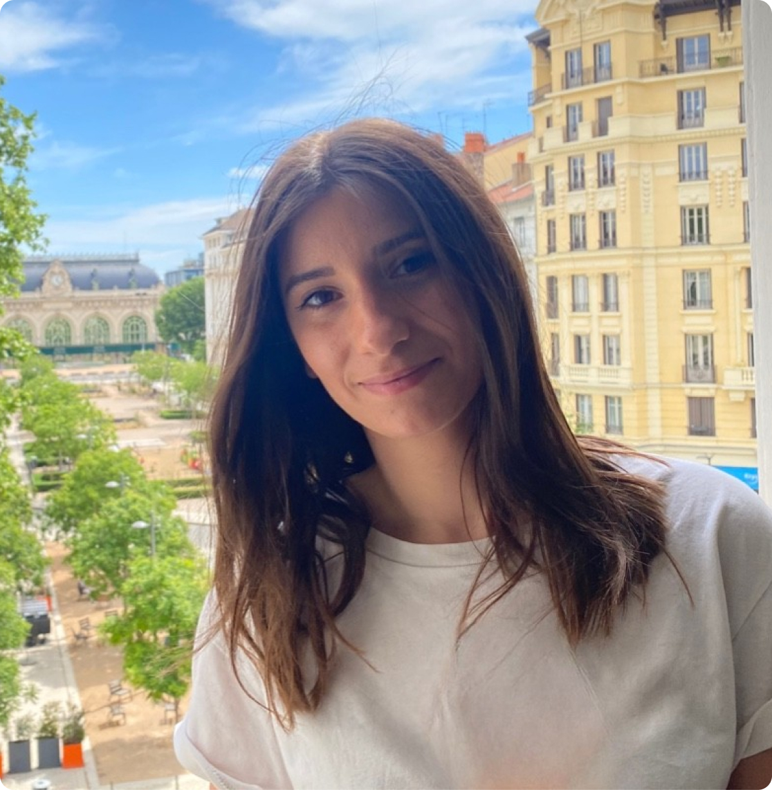

L'Équipe
Les Psychologues

Psychologue Clinicienne
LAURY MAGNIN
Spécialisée dans l'accompagnement des adolescents et des adultes, elle propose une approche centrée sur l'écoute active et la bienveillance.
En savoir plus —
Neuropsychologue
NOM DU PRATICIEN
Expertise en bilans cognitifs et remédiation pour enfants et adultes.
En savoir plus —